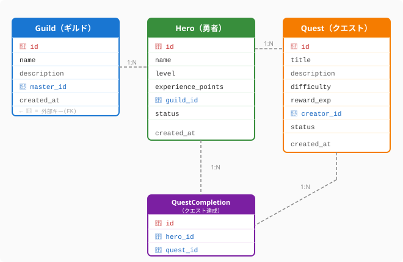

コードは実行されると消えます。しかしデータは残ります。冒険者が積み上げた経験値も、ギルドの名声も、すべてデータとして永続します。どれほど美しいアーキテクチャを設計しても、その「記憶の形」が歪んでいれば、システムは長く健全に動き続けることができません。
クリーンアーキテクチャで「依存の方向」を設計し、SOLID原則で「変化への耐性」を身につけた今、次はデータの形——スキーマ——を設計する目を養いましょう。
データ設計の出発点は、システムに登場する「もの（エンティティ）」とその「関係（リレーションシップ）」を整理することです。
Hero・Quest・Guild など。Hero なら name・level・experience_points。リレーションシップには多重度があります。
| 多重度 | 意味 | QuestForge例 |
|---|---|---|
| 1:1 | 一対一 | 勇者 ↔ キャラクタープロフィール |
| 1:N | 一対多 | ギルド ↔ 勇者（1つのギルドに複数の勇者） |
| M:N | 多対多 | 勇者 ↔ クエスト（一人の勇者が複数クエストを達成、1つのクエストを複数の勇者が達成） |
M:N関係はDBでは直接表現できないため、中間テーブル（ジャンクションテーブル）で解決します。QuestForgeでは QuestCompletion がこれにあたります。次の図は、QuestForgeの主要エンティティ（Hero・Quest・Guild・QuestCompletion）とそれらの関係・多重度を示したERダイアグラムです。

ここで示された設計では、各テーブルが「自分の責任範囲の情報だけ」を持つという原則が貫かれています。勇者の名前やレベルは Hero テーブルにだけ存在し、クエスト達成の記録は QuestCompletion 中間テーブルに集約されます。こうすることで、勇者がレベルアップしても更新箇所は一か所に限定され、「同じ勇者なのにレコードによってデータが違う」という矛盾が構造的に生まれなくなります。
この設計のポイント：
HeroとGuildは 1:N——一人の勇者は一つのギルドに所属し、一つのギルドに複数の勇者がいるHeroとQuestは M:N——QuestCompletion 中間テーブルで解決。completed_at のような「達成という出来事」の属性をここに持たせるQuestの creator_id——どの勇者（またはギルドマスター）がクエストを作ったかを追跡する非正規化されたテーブルはこのような問題を生みます。
# 悪い例：一つのテーブルにすべてを詰め込む
quest_completion:
id | hero_name | hero_level | guild_name | quest_title | completed_at
1 | アルス | 12 | 銀の盾 | ゴブリン討伐 | 2024-01-10
2 | アルス | 12 | 銀の盾 | 竜の洞窟 | 2024-01-15hero_name・hero_level・guild_name が何度も重複すると、アルスがレベルアップすれば全行を更新しなければならず、更新漏れがあれば「同じ勇者なのにレコードによってレベルが違う」という矛盾が生まれます。これを防ぐのが正規化です。
第1正規形（1NF）: 各列は原子値（分割できない値）を持つ
tags = "戦士,魔法使い" → ✅ tag テーブルを別に作る第2正規形（2NF）: 主キーの一部にだけ依存する属性を排除（複合主キーの場合）
(hero_id, quest_id) が主キーなのに hero_name を持つのは NG → Hero テーブルに分離第3正規形（3NF）: 主キー以外の列に依存する属性を排除（推移的関数従属を排除）
guild_id → guild_name という依存関係を quest_completion に持たせるのは NG → Guild テーブルに分離QuestForgeのERDはこの3NFを守っています。各テーブルは「自分の責任範囲の情報だけ」を持ちます。
データベースの選択は、アーキテクチャの選択と同じくトレードオフです。「どちらが優れているか」ではなく「何に向いているか」を問います。
| 観点 | SQL（リレーショナルDB） | NoSQL（ドキュメント/KVS等） |
|---|---|---|
| データ構造 | 定まったスキーマ（テーブル） | 柔軟なスキーマ（JSON等） |
| 得意なこと | 複雑な結合・集計・トランザクション | 大規模な読み書き・スキーマ変更の頻度が高い場合 |
| 整合性 | ACID特性で強い整合性を保証 | 結果整合性（最終的には一致）が多い |
| QuestForgeでの用途 | 勇者・クエスト・達成の主データ | セッションデータ・キャッシュ・リアルタイム通知 |
QuestForgeの核心データ（勇者、クエスト、達成記録）は関係が複雑で整合性が重要なため SQL が適しています。一方、セッション管理やランキングのキャッシュは Redis（KVS）が自然に映えます。
一貫した命名規則は、スキーマを「読める設計書」にします。
-- テーブル名: スネークケース、複数形
heroes, quests, quest_completions, guilds
-- カラム名: スネークケース
experience_points, created_at, guild_id
-- 外部キー: 参照テーブル名_id
guild_id (guildsテーブルのid), creator_id (heroesテーブルのid)
-- 真偽値: is_ または has_ プレフィックス
is_active, has_completedインデックスは「どのクエリが速い必要があるか」から設計します。
-- よく使うクエリ: あるギルドの全勇者を取得
SELECT * FROM heroes WHERE guild_id = ?;
-- → guild_id にインデックスを張る
-- よく使うクエリ: ある勇者の達成済みクエストを取得
SELECT * FROM quest_completions WHERE hero_id = ?;
-- → hero_id にインデックスを張るすべての列にインデックスを張ると、書き込みが遅くなります。「読み取りの速さ」と「書き込みのコスト」のバランスを意識した設計が重要です。
設計は変わります。「勇者にアバター画像を追加したい」「クエストにタグ機能を追加したい」——こうした変更をDBに安全に反映する仕組みがマイグレーションです。
# マイグレーションの例（Alembicなどのツールで管理）
def upgrade():
# 新しい列を追加（既存データに影響しない安全な変更）
op.add_column('heroes',
sa.Column('avatar_url', sa.String(255), nullable=True)
)
def downgrade():
# ロールバック（必ずペアで定義する）
op.drop_column('heroes', 'avatar_url')マイグレーションの鉄則：
downgrade を書く: 問題が起きたとき、前の状態に戻せるnullable=True で追加してデータ移行 → nullable=False に変更、という2段階移行AIはスキーマ設計とマイグレーションの強力な助手です。「このER図を元にSQLのDDL（テーブル定義）を生成して」と依頼することで、エンティティ設計からすぐに実装に移れます。
「このマイグレーションで既存データや本番環境に影響が出るリスクはあるか？」とAIに問えば、見落としがちな副作用（ロック時間・インデックス再構築のコストなど）を指摘してもらえます。
「このテーブル定義で正規化の違反（重複・推移的依存）がないかレビューして」と依頼すれば、設計の盲点を早期に発見できます。
データの設計は、システムの「記憶の形」を決める仕事です。ERモデルでエンティティとその関係の地図を描き、正規化で重複と更新異常を排除することで、時間が経っても整合性を保てるスキーマが生まれます。SQLとNoSQLのどちらを選ぶかは、整合性と関係の複雑さを重視するかスケールと柔軟性を重視するかで決まりますが、現実のシステムはその両方を使い分けるハイブリッド構成が多数派です。そしてスキーマは静的なものではなく、マイグレーションという仕組みで継続的に進化させていくものです。コードと同様に、データの設計もまた生き続けます。